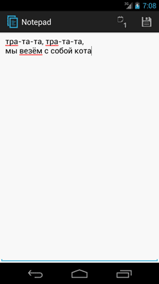
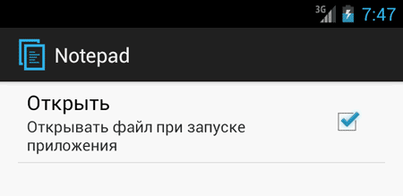
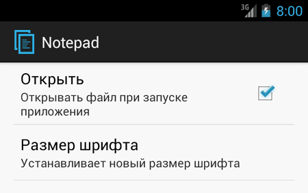
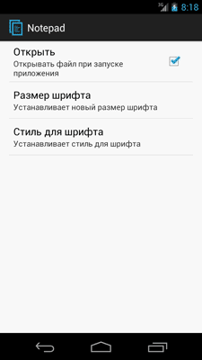
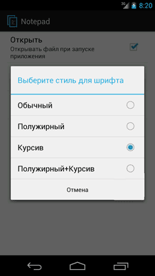

/* Моя кошка замечательно разбирается в программировании. Стоит мне объяснить проблему ей - и все становится ясно. */
John Robbins, Debugging Applications, Microsoft Press, 2000

/* Моя кошка замечательно разбирается в программировании. Стоит мне объяснить проблему ей - и все становится ясно. */
John Robbins, Debugging Applications, Microsoft Press, 2000
Операции с файлами
Сохранение настроек - Флажки
Сохранение текстовых настроек
Сохранение настроек - Списки
Рассмотрим вопросы ввода/вывода, которые являются распространёнными операциями в программировании. В Android можно сохранять файлы непосредственно на самом устройстве или на внешней карте памяти. По умолчанию другие приложения не могут обращаться к этим файлам. Android использует стандартные операции ввода/вывода, принятые в Java. Например, Android реализует потоки с помощью классов из пакета java.io.
Чтобы записать данные в файл, необходимо вызвать метод Context.openFileInput() и передать в качестве параметра имя файла. Метод возвращает стандартный Java-объект FileOutputStream. Вызов метода для данного файла из другого приложения не будет работать, обратиться вы можете только к своим файлам. Например, чтобы создать файл и записать данные, пишем следующий код:
String FILENAME = "hello_file";
String mystring = "hello world!";
FileOutputStream fos = openFileOutput(FILENAME, Context.MODE_PRIVATE);
fos.write(mystring.getBytes());
fos.close();
Если имеется статический файл, который надо упаковать с вашим приложением во время компиляции проекта, можно сохранить его в каталоге res/raw/, а затем открыть его при помощи метода Resources.openRawResource(). Он возвращает объект InputStream, который можно использовать для чтения файла. После окончания работы с потоком не забудьте его закрыть, вызвав метод close().
Создадим простейший аналог Блокнота, позволяющий записывать и читать данные из файла.
На главной форме приложения разместим виджет EditText и растянем его на весь экран приложения:
<?xml version="1.0" encoding="utf-8"?>
<LinearLayout xmlns:android="http://schemas.android.com/apk/res/android"
android:layout_width="fill_parent"
android:layout_height="fill_parent"
android:orientation="vertical" >
<EditText
android:id="@+id/editText"
android:layout_width="fill_parent"
android:layout_height="fill_parent"
android:gravity="top|left"
android:inputType="textMultiLine" />
</LinearLayout>
Создадим пункты меню Открыть и Сохранить в ресурсах:
<?xml version="1.0" encoding="utf-8"?>
<menu xmlns:android="http://schemas.android.com/apk/res/android" >
<item
android:id="@+id/action_open"
android:icon="@android:drawable/ic_menu_day"
android:orderInCategory="100"
android:showAsAction="ifRoom|withText"
android:title="@string/action_open"/>
<item
android:id="@+id/action_save"
android:icon="@android:drawable/ic_menu_save"
android:orderInCategory="100"
android:showAsAction="ifRoom|withText"
android:title="@string/action_save"/>
</menu>
В методах openFile() и saveFile() реализуем операции по открытию и сохранению файла.
package ru.alexanderklimov.notepad;
import java.io.BufferedReader;
import java.io.InputStream;
import java.io.InputStreamReader;
import java.io.OutputStream;
import java.io.OutputStreamWriter;
import android.os.Bundle;
import android.app.Activity;
import android.view.Menu;
import android.view.MenuItem;
import android.widget.EditText;
import android.widget.Toast;
public class MainActivity extends Activity {
// имя файла
private final static String FILENAME = "sample.txt";
private EditText mEdit; // текстовое поле
@Override
protected void onCreate(Bundle savedInstanceState) {
super.onCreate(savedInstanceState);
setContentView(R.layout.activity_main);
mEdit = (EditText) findViewById(R.id.editText);
}
@Override
public boolean onCreateOptionsMenu(Menu menu) {
// Inflate the menu; this adds items to the action bar if it is present.
getMenuInflater().inflate(R.menu.main, menu);
return true;
}
@Override
public boolean onOptionsItemSelected(MenuItem item) {
// TODO Auto-generated method stub
switch (item.getItemId()) {
case R.id.action_open:
openFile(FILENAME);
return true;
case R.id.action_save:
saveFile(FILENAME);
return true;
default:
return true;
}
}
// Метод для открытия файла
private void openFile(String fileName) {
try {
InputStream inputstream = openFileInput(FILENAME);
if (inputstream != null) {
InputStreamReader isr = new InputStreamReader(inputstream);
BufferedReader reader = new BufferedReader(isr);
String str;
StringBuffer buffer = new StringBuffer();
while ((str = reader.readLine()) != null) {
buffer.append(str + "\n");
}
inputstream.close();
mEdit.setText(buffer.toString());
}
} catch (Throwable t) {
Toast.makeText(getApplicationContext(),
"Exception: " + t.toString(), Toast.LENGTH_LONG).show();
}
}
// Метод для сохранения файла
private void saveFile(String FileName) {
try {
OutputStream outputstream = openFileOutput(FILENAME, 0);
OutputStreamWriter osw = new OutputStreamWriter(outputstream);
osw.write(mEdit.getText().toString());
osw.close();
} catch (Throwable t) {
Toast.makeText(getApplicationContext(),
"Exception: " + t.toString(), Toast.LENGTH_LONG).show();
}
}
}
В результате мы получили простой блокнотик, позволяющий сохранять записи в заданном файле. При желании вы можете усовершенствовать приложение, добавив возможность создания новых файлов и их удаления.

Расширим функциональность блокнота, добавив в него возможность сохранения различных настроек.
Подготовим различные настройки, которые будем хранить в файле строковых ресурсов strings.xml:
<?xml version="1.0" encoding="utf-8"?>
<resources>
<string name="app_name">Notepad</string>
<string name="action_open">Открыть</string>
<string name="action_save">Сохранить</string>
<string name="action_settings">Настройки</string>
<string name="pref_openmode">Режим открытия</string>
<string name="pref_color">Цвет</string>
<string name="pref_color_black">Черный цвет</string>
<string name="pref_color_red">Красный цвет</string>
<string name="pref_color_green">Зеленый цвет</string>
<string name="pref_color_blue">Синий цвет</string>
<string name="pref_size">Размер</string>
<string name="pref_style">Стиль</string>
<string name="pref_style_regular">Нормальный</string>
<string name="pref_style_bold">Полужирный</string>
<string name="pref_style_italic">Курсив</string>
</resources>
Теперь создадим файл настроек preferences.xml (если забыли, то перечитайте статью Сохранение настроек):
<?xml version="1.0" encoding="utf-8"?>
<PreferenceScreen xmlns:android="http://schemas.android.com/apk/res/android" >
<CheckBoxPreference
android:key="@string/pref_openmode"
android:summary="Открывать файл при запуске приложения"
android:title="Открыть" />
</PreferenceScreen>
Итак, мы определили первую настройку под именем pref_openmode, которая будет или сразу загружать файл в поле редактирования, если установлен флажок, или открывать пустое поле, если флажок не установлен.
Создадим новую активность, которая наследует от класса PreferenceActivity. В классе активности для предпочтений внутри метода обратного вызова onCreate() нужно только вызвать метод addPreferencesFromResource() и загрузить XML-файл preferences.xml, содержащий наши настройки (пока одну):
package ru.alexanderklimov.notepad;
import android.os.Bundle;
import android.preference.PreferenceActivity;
public class SettingsActivity extends PreferenceActivity {
@Override
public void onCreate(Bundle savedInstanceState) {
super.onCreate(savedInstanceState);
// загружаем предпочтения из ресурсов
addPreferencesFromResource(R.xml.preferences);
}
}
Не забываем добавить объявление активности SettingsActivity в файл манифеста AndroidManifest.xml:
<activity
android:name=".SettingsActivity"
android:label="@string/app_name">
</activity>
Добавим новый пункт меню Настройки в меню (файл res/menu/main.xml), чтобы открывать подготовленное окно настроек.
<item
android:id="@+id/action_settings"
android:orderInCategory="100"
android:showAsAction="never"
android:title="@string/action_settings"/>
В методе обратного вызова onOptionsItemSelected() добавим новый блок case для оператора switch:
case R.id.action_settings:
Intent intent = new Intent();
intent.setClass(this, SettingsActivity.class);
startActivity(intent);
return true;
Запустите приложение и убедитесь, что в меню появился новый пункт, который открывает окно настроек.
Чтение установок предпочтений нужно проводить в методе onResume(), который вызывается системой как во время запуска приложения, так и после закрытия окна настроек и возврата главной активности на передний план:
@Override
public void onResume() {
super.onResume();
SharedPreferences prefs = PreferenceManager
.getDefaultSharedPreferences(this);
// читаем установленное значение из CheckBoxPreference
if (prefs.getBoolean(getString(R.string.pref_openmode), false)) {
openFile(FILENAME);
}
}
В методе getBoolean() второй параметр false означает значение по умолчанию для возвращаемого значения предпочтения, если запрос на чтение установленного значения закончится неудачей.
Мы создали первую настройку, позволяющую сразу открывать нужный файл для редактирования, если отметить галочкой нужный пункт.

Добавим возможность устанавливать размер шрифта для текста. Откроем снова файл preferences.xml и добавим новый элемент EditTextPreference:
<EditTextPreference
android:defaultValue="14"
android:dialogTitle="Введите размер шрифта (от 10 до 32)"
android:key="@string/pref_size"
android:summary="Устанавливает новый размер шрифта"
android:title="Размер шрифта" />
В метод onResume() добавим новый код для чтения установленного значения размера шрифта:
// читаем размер шрифта из EditTextPreference
float fSize = Float.parseFloat(prefs.getString(
getString(R.string.pref_size), "20"));
// применяем настройки в текстовом поле
mEdit.setTextSize(fSize);
Запустите проект и вызовите окно настроек. Теперь у нас появилась опция установки размера шрифта. Если щёлкнуть на новом пункте, то откроется диалоговое окно с текстовым полем ввода.


Обращаю ваше внимание, что в нашем примере не проверяется пользовательский ввод, что может привести к ошибкам, если вместо числового значения для размера шрифта пользователь введет слово Кот или любое другое слово из трёх букв. Никогда не доверяйте пользователю!
Продолжим работу с текстовым редактором и добавим в него список для выбора стиля текста. В списке будет четыре опции: Обычный, Полужирный, Курсив, Полужирный+Курсив.
Подготовим массив строк и сохраним его в файле arrays.xml, который необходимо поместить в каталог res/values/.
<?xml version="1.0" encoding="utf-8"?>
<resources>
<string-array name="text_style">
<item>Обычный</item>
<item>Полужирный</item>
<item>Курсив</item>
<item>Полужирный+Курсив</item>
</string-array>
</resources>
В файл preferences.xml добавим дополнительный элемент <ListPreference>, в котором определим атрибуты заголовка окна, привязку к массиву значений и значение по умолчанию:
<ListPreference
android:key="@string/pref_style"
android:title="Стиль для шрифта"
android:summary="Устанавливает стиль для шрифта"
android:defaultValue="1"
android:entries="@array/text_style"
android:entryValues="@array/text_style"
android:dialogTitle="Выберите стиль для шрифта" />
Для чтения настроек из списка добавляем код в метод onResume():
// читаем стили текста из ListPreference
String regular = prefs.getString(getString(R.string.pref_style), "");
int typeface = Typeface.NORMAL;
if (regular.contains("Полужирный"))
typeface += Typeface.BOLD;
if (regular.contains("Курсив"))
typeface += Typeface.ITALIC;
// меняем настройки в EditText
mEdit.setTypeface(null, typeface);
Запустив проект, вы теперь увидите новую настройку Стиль для шрифта, которая открывает диалоговое окно для выбора стиля из списка. Обратите внимание, что в диалоговом окне нет кнопки сохранения, только Отмена. Изменения сохраняются сразу при выборе опции списка.
 
В статье Сохранение настроек можно прочитать дополнительные материалы по улучшению окна настроек. Например, можно добавить новую настройку, связанную с выбором цвета для текста.